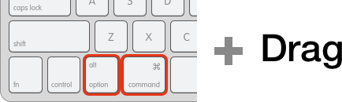
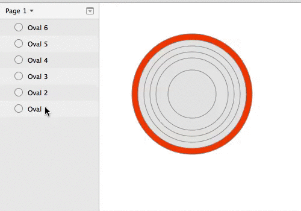

「Sketch 3 Advent Calendar 2014」23日目の記事です。
多分「Sketch 3の基本。」に書き忘れている（この記事公開時点で）、軽めのキーコンビネーションネタでお届けします。
背面にあろうと画面外にあろうと、とにかく選択しているレイヤーを確実にドラッグできるキーコンビネーションを紹介します。
レイヤーを選択し、Command + Optionを押しながら、適当にドラッグしてみてください。CommandとOptionは、ドラッグし始めたら離してOKです。

どうですか？できましたか？こんな感じになると思います。

動かしたいレイヤーの上にレイヤーが重なっていても大丈夫ですし、そもそもポインターがレイヤー上になくても大丈夫です。特にアートボードを動かす時は便利ではないでしょうか。
それでは、よいSketchライフを！